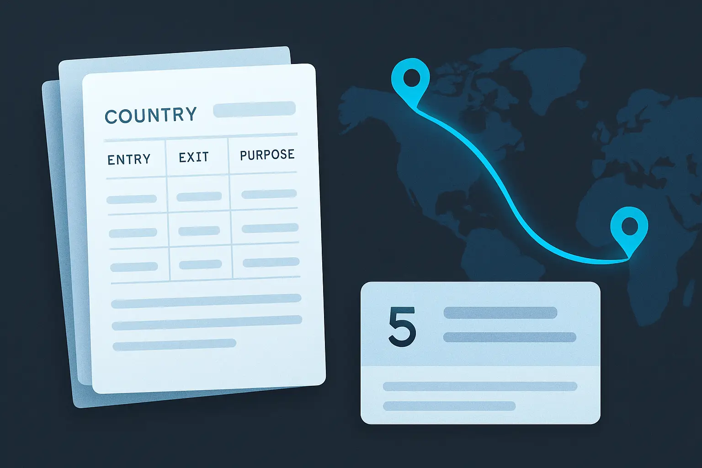

How to Export Your Travel History for a Visa Application
What an exported travel-history record is trying to achieve, when it genuinely helps, and what to verify before relying on one in a formal submission.
Last verified: June 2026
What This Page Explains
When people search for how to export travel history for a visa application, they often have two separate problems: they need a clean, formatted record of their trips, and they are not sure whether what they are about to produce will actually be adequate. This page explains what an exported travel-history record is trying to achieve, when having one genuinely helps, what makes an exported record weak or misleading, and what to check before relying on one in a formal submission.
What an Exported Travel-History Record Is Trying to Do
An exported record — a CSV, PDF, or formatted list — is a presentation of a travel chronology. Its purpose is to make that chronology reviewable: easier to transfer onto a form, easier to cross-check against documents, and easier to share with someone who needs to see it.
What export does not do is validate the underlying data. If the log the export is drawn from contains approximate dates, gaps, or quietly guessed entries, the export will reproduce those faithfully in a clean format. A well-formatted spreadsheet with an inaccurate date is not better than a rough list with the same inaccurate date — it may be worse, because it looks more authoritative than it is.
This distinction matters because people often treat export as the end of the problem. It is not. Export is the step after the hard work of building a reliable chronology.
When Export Is Useful
Having an exportable travel record genuinely helps when:
- A form asks for country-by-country trips across multiple years and you want a structured reference to copy from rather than relying on memory.
- You have a consulate appointment and want to bring a formatted summary of your travel alongside your passport.
- You need to compare your record against another document — a prior visa application or an official entry record — to check for consistency before you submit.
- You are preparing the same travel history for multiple purposes at once and need it presented consistently across different forms.
What export does not solve by itself:
- A record that was never complete. Export moves information out of a log — it does not add trips that were never entered.
- Approximate or reconstructed dates. Export preserves the precision of the underlying data, including any approximations logged without a supporting source.
- Discrepancies between the log and your passport or official records. Those discrepancies exist in the underlying data and remain after export.
What Makes an Exported Record Weak or Misleading

The quality of an exported record depends entirely on the quality of the log it comes from. Common problems:
- Gaps in coverage. If trips were logged inconsistently — or if the log only starts from a certain date and earlier travel was never entered — the export will present a partial record that looks complete but is not.
- Approximate dates presented as exact. A trip logged as "arrived June 1" when the actual date is uncertain will export with that date appearing confirmed. If the record is later compared against a passport stamp or official entry record, the approximation becomes a problem.
- Missing legs of multi-country trips. A journey that passed through a third country, or covered multiple destinations, may have been logged as a single trip to one country. Whether the missing legs matter depends on what the specific application is asking for.
- No source notes attached to entries. An entry with a date but no note about what that date is based on is harder to verify or correct later. When the record is exported, that missing context does not travel with it.
Export quality is a downstream problem. If an export looks incomplete or uncertain, the issue is not with the export step — it is with the record behind it. Fixing the underlying log is the only way to produce a better export.
Tracking this yourself? AtlasDays keeps a private, dated travel record on your iPhone and counts the days that matter — visa limits, residency thresholds, and country totals. Get the app →
What to Verify Before Relying on an Export
Before using an exported record in a formal submission, check the following:
- Coverage: Does the record span the full lookback period the application requires? Most applications specify a required window. A log that starts later than that window will be incomplete even if internally accurate.
- Approximations: Are uncertain dates clearly marked as approximate? A date entered as an estimate can conflict with a passport stamp or official entry record if compared later.
- Gaps: Are there unexplained periods with no activity? A gap that is inconsistent with the rest of the application may prompt questions.
- Passport alignment: Do the key entries in the log match the stamps and visas in your passport? Check the main trips before you submit.
- Consistency with prior submissions: If you have submitted travel history in a previous application, what you submit now should not contradict it without explanation.
Practical Caution and Official-Instructions Boundary
This page is a general explainer about exported travel records. It does not describe what any specific application requires or what any authority will accept.
- Different applications ask for different levels of detail: exact dates or approximate periods, country-level or city-level, all travel or only certain categories.
- Some applications ask for supporting documents alongside any travel summary you provide. An exported list is not itself documentation — official supporting evidence such as passport stamps, booking confirmations, or official entry records may still be needed.
- Whether a formatted export is accepted as a supporting document, or is useful only as a reference for completing the form, depends on the specific application's instructions.
- The form's own guidance, the relevant authority's requirements, and where appropriate, professional immigration advice are what control what to prepare and how to present it.
When This Approach Starts to Break Down
Exporting from a well-maintained log is straightforward. The approach becomes unreliable when:
- The log was built retrospectively from memory rather than recorded as travel happened.
- The record was maintained across multiple apps, spreadsheets, or documents that were never reconciled into a single consistent chronology.
- Earlier trips were logged with varying precision — some entries have exact dates and clear sources, others have approximations that look identical in the export.
- The application asks for a level of detail the log was not designed to capture, such as purpose of travel, city-level locations, or supporting-document references.
In those cases, the problem is not how to export. It is that the underlying record needs work before exporting it will produce something reliable. The reconstruction page covers that process in detail.
How AtlasDays Helps
AtlasDays is designed for the part of this problem that happens before the application: building and maintaining a dated travel chronology as you go, so that when a form asks for your history, the record already exists.
For the export step itself, AtlasDays produces a structured output that is easier to use as a reference or to share than a manual spreadsheet. The log format captures the fields that travel-history questions typically ask for — country, entry date, exit date, and duration. The usefulness of that export depends on how consistently the underlying log was maintained.
If you already have entries in AtlasDays and want to walk through the in-app export workflow, see Help Center: Export and Reports.
Keep the record before the form asks for it
AtlasDays builds a country-by-country travel log as you go, so you are not reconstructing old trips every time an application requires your history.
Get AtlasDays on the App Store